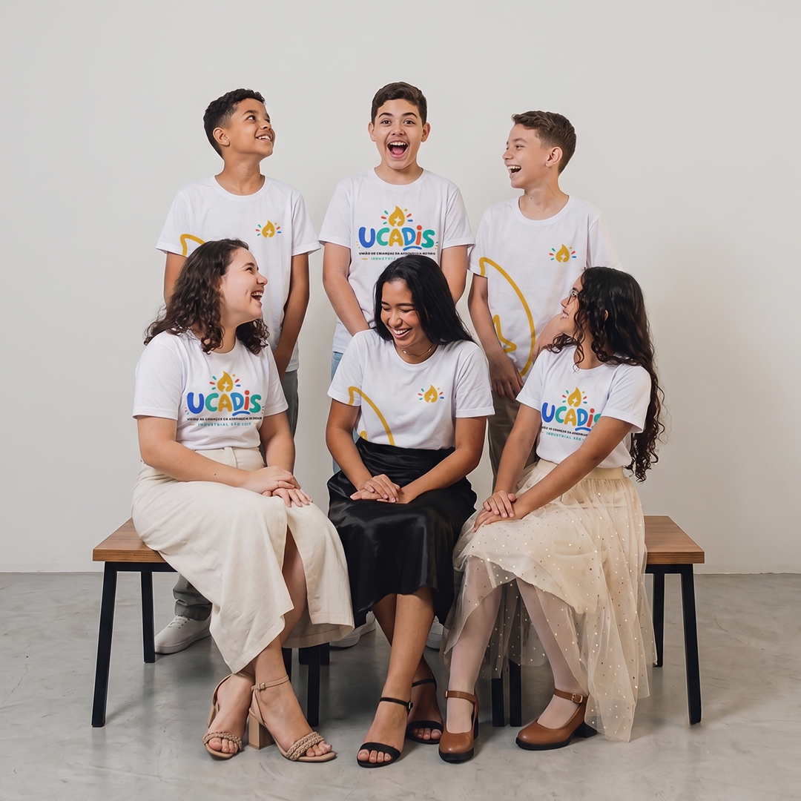
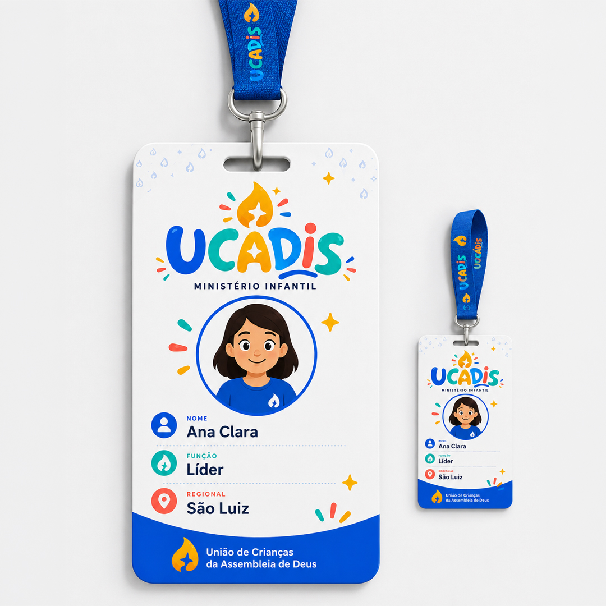
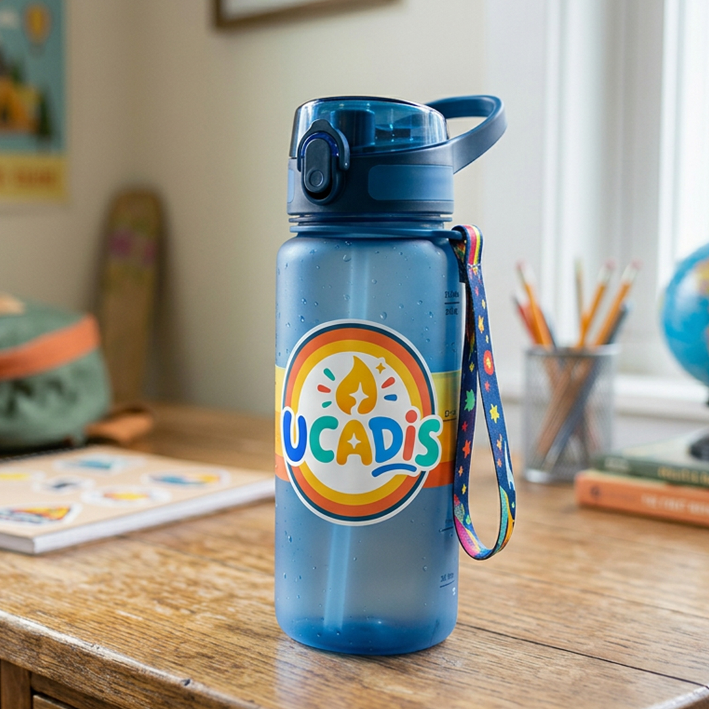
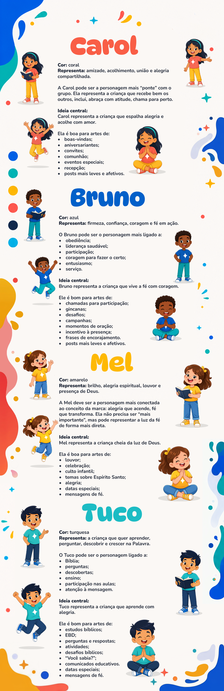

Narrativa de Negócio e Impacto Operacional
Mapeamento do cenário de gargalos e desenvolvimento da arquitetura sistêmica de design.
O Problema da Descentralização
"A instituição enfrentava um sério desafio de descentralização: sub-departamentos (infantil, juvenil, eventos e mídias sociais) operavam de forma visualmente isolada, gerando severo ruído na percepção da marca mãe e enfraquecendo a unidade institucional. Sem diretrizes claras, a criação de peças dependia de voluntários rotativos sem treinamento técnico, resultando em refações constantes, desalinhamento cromático e ineficiência operacional na esteira de produção diária."
Arquitetura Monolítica Endossada
"Desenvolvimento de uma Identidade Visual modular sob o conceito de Arquitetura Monolítica Endossada. O sistema visual foi projetado para ser elástico: a estrutura do símbolo âncora permanece rígida, enquanto as assinaturas e cores de suporte variam conforme o segmento de atuação. Criou-se um ecossistema visual autoinstrutivo que blindou a integridade da marca e reduziu drasticamente o atrito na ponta da operação."
Manual da Marca, Espaço e Frota Logística
Provas técnicas de aplicação em múltiplos pontos de contato e grandes formatos.

Manual da Marca & Governança Sistêmica
Demonstração visual das regras de proteção, proibições e consistência do sistema (Design Ops). A entrega do manual completo comprova a entrega de um projeto pronto para ser desdobrado de forma totalmente autônoma por equipes locais, eliminando a dependência técnica e reduzindo refações na esteira diária.
Sinalização de Ambientes & Wayfinding
Demonstração de sinalização interna, placas de fluxo e totens direcionais. Prova técnica de design voltado à experiência do usuário, organizando a circulação e o controle de movimentação com alta visibilidade e clareza no espaço físico institucional.


Sinalização Veicular & Frota Logística
Aplicação do ecossistema visual em veículos utilitários e de transporte, validando o comportamento da identidade em grandes formatos, alta velocidade e canais de logística externa durante grandes eventos.
Galeria de Aplicações & Merchandising
Validação do sistema visual aplicado a suportes físicos institucionais cotidianos.

Camisetas Institucionais
Uniformização elástica para equipes, voluntários e eventos infantis.

Crachás de Identificação
Segurança, controle de fluxo e hierarquia visual em múltiplos departamentos.

Utilitários & Merchandising
Presença de marca cotidiana com foco em sustentabilidade e engajamento.
Especificações Cromáticas & Sistema Tipográfico
Paleta de Cores Institucional
Proporção de Aplicação (Regra 60-30-10)
Distribuição cromática estratégica para garantir equilíbrio visual, respiro e direcionamento do olhar.
Cinza Claro (#F5F6F8) e Azul Vital (#2563EB): Dominam áreas de fundo e contêineres primários para garantir alto contraste, legibilidade e respiro visual.
Turquesa (#14B8E6) e Azul Marinho (#0B1D3A): Aplicados em elementos estruturais, cartões e divisórias secundárias para estruturar a hierarquia de leitura.
Amarelo Luz (#F4B400) e Coral (#FF6B6B): Reservados pontualmente para botões de ação, badges e focos de alta atenção. Nunca usados como cor dominante.
Famílias Tipográficas
Voz expressiva para títulos e alta legibilidade para interfaces e corpo de texto.
Fonte arredondada e expressiva criada para comunicar a alegria, luz e dinamismo do público infantil. Usada em títulos, nomes de eventos e logos.
Família tipográfica sem serifa balanceada com remates arredondados. Oferece máxima legibilidade para blocos de leitura, formulários e interfaces.
"Crianças cheias do Espírito, vivendo o amor de Deus e espalhando luz por onde passam. Um ecossistema de aprendizado e comunhão."
Sistema de Mascotes & Comunicação
Arquétipos, psicologia das cores e diretrizes práticas para aplicação de cada personagem.
